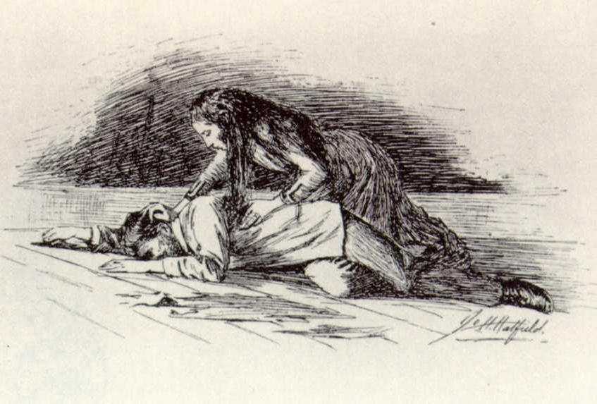

This is the image on the last page of The Yellow Wall-Paper where John
lays on the floor. In the poem, the evening is portrayed as stagnant or
it may claim to be empty. Regardless, the evening is comfortable and
streched on the floor, encapsulating you and me
. J. Alfred Prufrock
is trying to tell the readers that it has become evening. Between him
and us, nothing eventful is happening and everything appears calm.
In The Yellow Wall-Paper, the evening might seem uneventful to John,
but this is not the case for Jane. In the concluding scene of the story,
John barges into the room to see Jane creeping. In an instant, John
appeared to have fainted, stretched right across my path by the
(Stetson, 656 ). John is the uneventful evening which lays beside
wall
Jane and the woman, which is often argued to be her subconsious.
This illumination of the text is provided by David Zhou! Right now, you are currently at "stretched on the floor". Click to return to the excerpt.